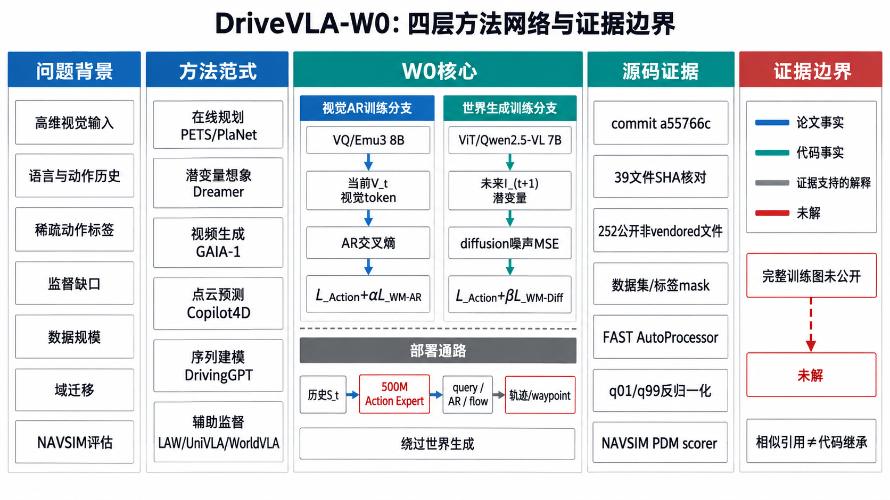
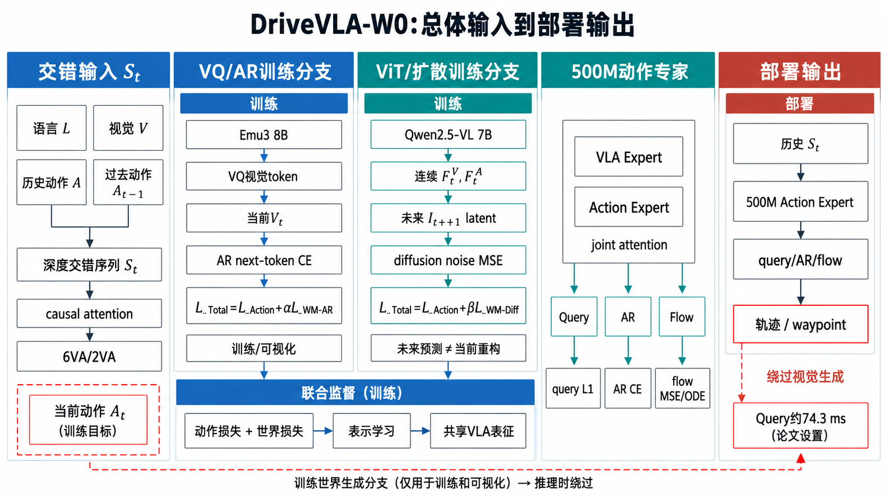
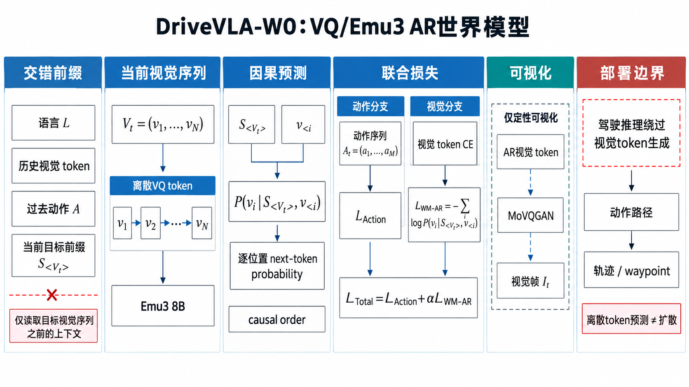
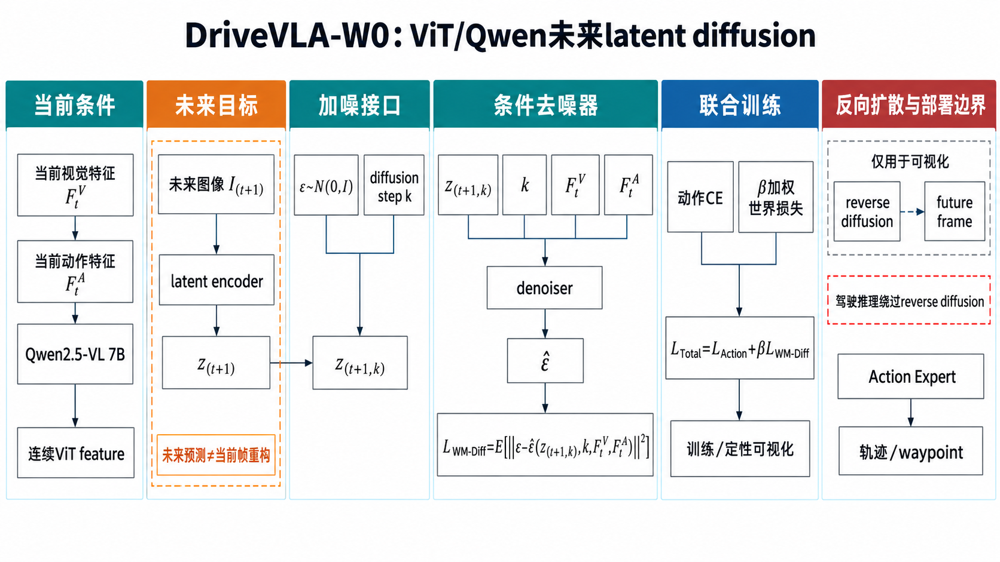
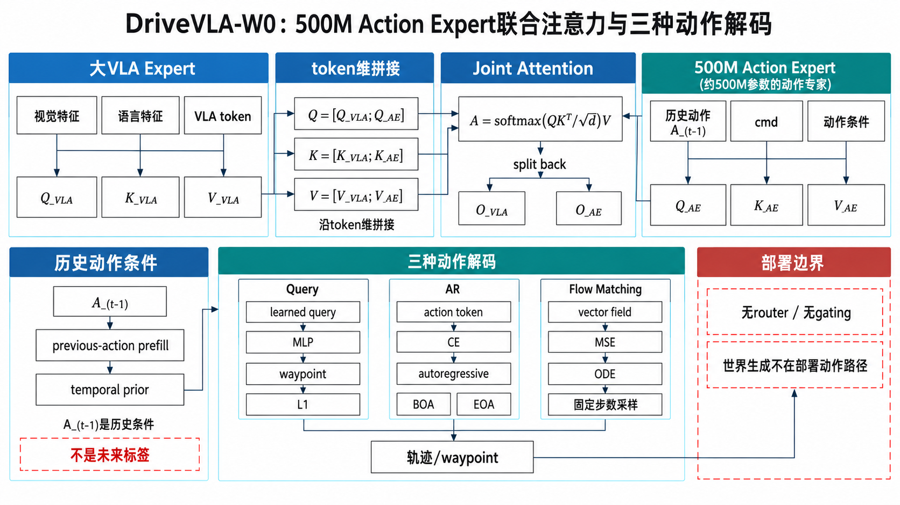
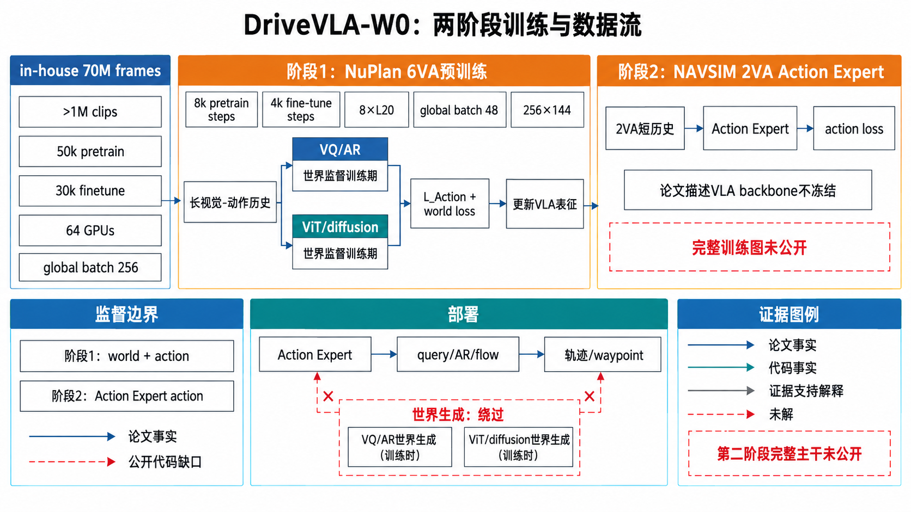
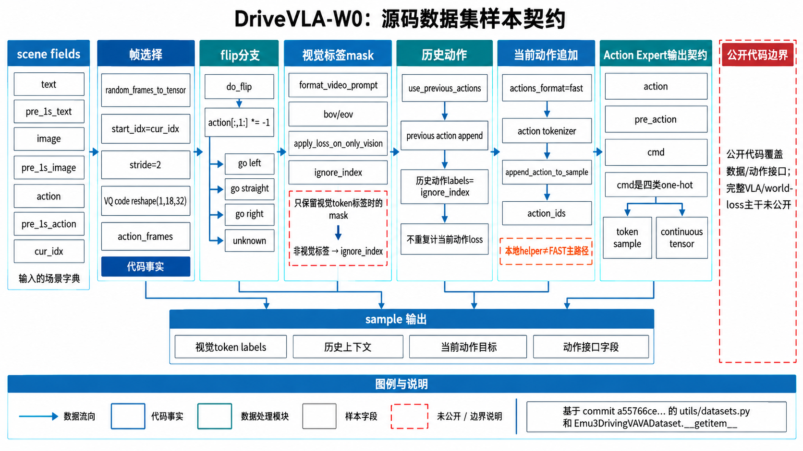
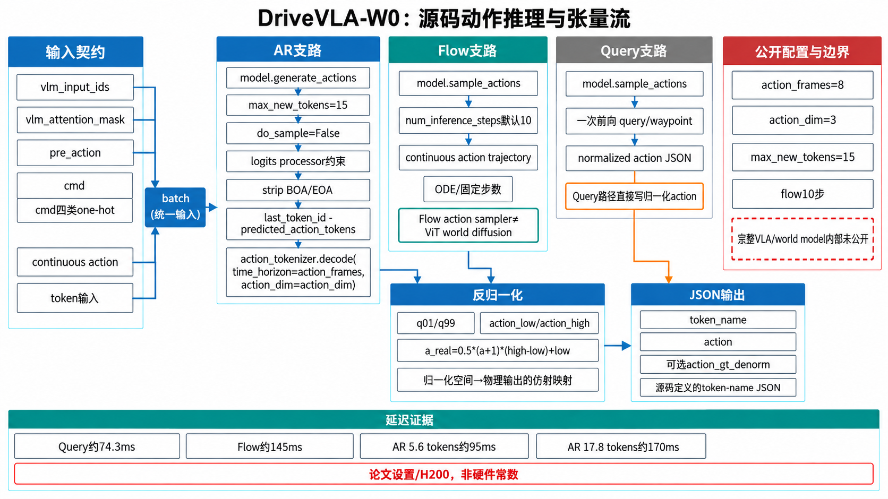
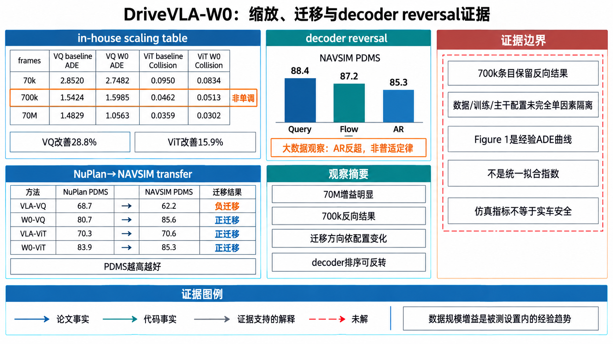
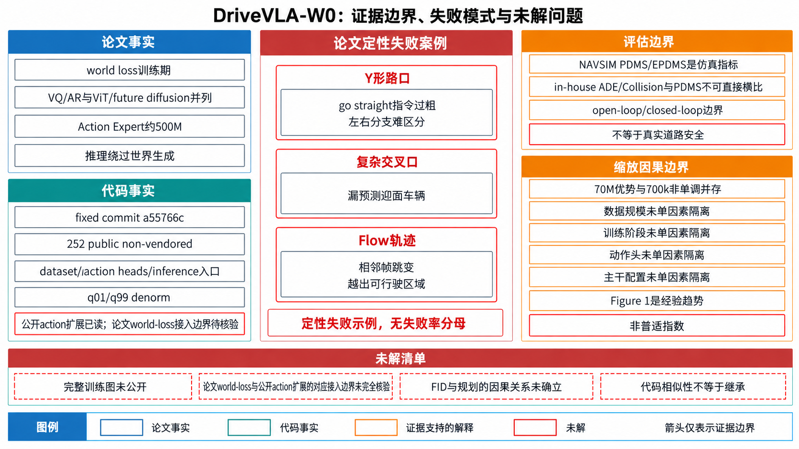

DriveVLA-W0：世界模型如何放大自动驾驶 VLA 的数据缩放律
把未来视觉预测接到动作学习旁边：从监督缺口、VQ/ViT 两条世界模型路径，到 500M Action Expert、源码调用链和 70M 帧缩放证据。
一句话总结
DriveVLA-W0 观察到：8B/7B 级 VLA 如果只接受少量 waypoint 或动作 token 的监督，视觉表征能力会被“监督缺口”浪费。它在动作损失旁加入动作条件的未来图像预测：Emu3 离散视觉路线用 AR next-token loss，Qwen2.5-VL 连续特征路线用 latent diffusion loss；再把学到的表征交给 500M Action Expert 做低延迟轨迹解码。结果显示，世界模型让预训练跨动作分布迁移变成正收益，并在 70M 帧阶段让性能增益显著加速。
阅读地图：先建立因果链
这篇论文的贡献不能只概括成“加了一个 world model”。正确的阅读顺序是：先看输入和基线的监督位置，再看 VQ 与 ViT 两条世界模型如何把未来视觉误差接回主干；接着看 Action Expert 如何把大主干的能力转成实时动作；最后用迁移、缩放、消融和失败案例判断这条链是否真的成立。下图是全文的总览锚点，蓝色和青色的实线是驾驶推理主路径，橙色虚线是训练辅助损失。

全部细节
- 最左侧“输入历史”堆叠语言 L、图像 V、过去动作 A，表达论文的深度交错序列，而不是单帧图像分类。
- 中间上方蓝色 VQ 路径依次标出 Emu3 8B、离散视觉 token、AR 世界模型和未来图像；下方青色 ViT 路径依次标出 Qwen2.5-VL 7B、连续视觉特征、扩散世界模型和未来图像。
- 右侧 Action Expert 500M 以联合注意力为容器，列出 Query、AR、Flow Matching 三个可替换动作解码器；过去动作 A 从底部进入，表示时间先验。
- 从输入到 Action Expert 再到轨迹的蓝/青实线标为“推理主路径”。世界模型的未来图像只向下连接到联合训练区域，橙色虚线明确它是辅助监督。
- 底部再次把联合训练和推理主路径并排，红框“世界模型仅作训练监督；推理时跳过生成”是本图最重要的边界，防止误读成在线视频生成器。

全部细节
- 最左侧是按时间交错的历史输入：语言指令 、视觉表示 、过去动作 共同组成 ；箭头方向从旧时间步指向当前时间步，强调动作是条件而不是未来标签。
- 中部把同一条样本拆成 VQ/AR 和 ViT/扩散两条辅助监督路线。VQ 用离散视觉 token 的 next-token 交叉熵，ViT 用未来图像 latent 的噪声预测 MSE；两条路线都回传到共享视觉表征。
- 图中 是论文机制中的模态特征接口。固定树已公开 Emu3 action extensions、shared attention/masking 与 Qwen ROSS/denoiser；但这不等于论文 checkpoint/data/world-loss caller 的完整对应关系已闭合。
- 右侧 500M Action Expert 接收主干表征和上一动作，经过联合注意力后进入 Query、AR 或 Flow Matching 之一；三者是可替换动作出口，不是同时串联的三个规划器。
- 底部橙色路径表示训练辅助损失，蓝/青色路径表示部署时保留的动作推理路径。世界模型的视觉生成或反向扩散只在训练/可视化边界内出现。
- 图中轨迹张量写成解释性形状 ，用于帮助理解 batch、时间点和通道的层次；论文与配置并未给出一个适用于所有路径的统一 和维度，不能把它当成固定 API。
- 总目标可读成 或 ；图只表达联合优化关系，不虚构 的数值。
- 本图把后续 H02--H08 放回同一条链：数据字段决定 token，token 决定监督位置，监督位置决定共享主干收到的梯度，动作头再决定最终延迟。
一、为什么动作监督会成为缩放瓶颈
1.1 从高维观察到低维动作：监督信号在哪里消失
传统端到端驾驶模型面对的是高维、连续变化的视觉流，却通常只在最后输出几步 waypoint 或离散动作 token 上计算损失。一个 256×144 的前视图包含道路边界、车辆、行人、信号灯、遮挡关系和运动线索，而动作标签可能只有 3 秒内的 6 个 waypoint。动作损失当然能训练规划头，但对“哪些像素/视觉 token 解释了未来变化”几乎没有逐位置约束，这就是论文所说的 supervision deficit。
大型 VLM/VLA 的预训练能力带来了容量，却没有自动带来与驾驶动力学一致的表征。如果训练数据变多，模型只看到更多相似的动作标签，它可能更快记住数据集的动作分布，而不是学到“当前状态和采取某动作后会看到什么”。这解释了论文中一个反直觉结果：VLA-VQ 在 NuPlan 预训练后从 NAVSIM scratch 的 68.7 PDMS 降到 62.2，动作先验反而伤害了长尾场景迁移。
1.2 世界模型把同一条驾驶片段变成两种监督
DriveVLA-W0 不把世界模型当作单独的仿真器，而把未来视觉预测作为主干训练目标。给定当前和历史观测，模型一方面要输出动作，另一方面要解释动作导致的视觉后果。这样一段数据的梯度不再只来自少量动作维度，视觉 token 或 latent 的大量位置都参与误差计算。
论文的关键不是“图像生成越逼真越好”这一句口号，而是预测任务的条件关系：动作要进入视觉预测的条件，目标必须是未来帧。若只重构当前帧，模型可以直接复制当前外观；若未来目标与动作关联，模型必须编码道路几何、相对速度、遮挡和自车运动。附录中 6VA 的 FID 为 4.610、2VA 为 9.847，同时微调 PDMS 为 85.6 与 84.1，提供了生成质量与规划性能正相关的证据，但仍然是联合实验中的相关性，而不是排他性的因果证明。

全部细节
- 左上“监督维度不匹配”把高维图像 token/特征与低维 waypoint/action 并列：前者包含道路边界、目标物和时序变化，后者只记录转向、速度或制动等控制量。
- 中上“仅动作监督”画出视觉编码器到动作头再回传的窄红色路径。动作损失能训练规划头，但只在少数动作位置直接计算误差，因此共享视觉表征收到的监督更稀疏。
- 右上 VQ 区域把目标视觉状态拆成 个 token 位置，红色向上箭头表示每个位置都能产生交叉熵梯度；这里 是符号计数，不是论文公开的统一 token 数。
- 左下 ViT 区域把连续 latent 展开成 个元素，并在多个噪声步骤上计算去噪误差。“跨元素、跨步骤”表达监督来源更分散，不能解读成论文报告了具体梯度数量。
- 右下把“当前重建”与“未来/动作条件预测”分开：当前帧已经由 观察到，重建它容易走复制捷径；未来目标需要同时满足历史观测和动作条件，必须解释运动、遮挡和几何后果。
- 示例“减速后停止线、前车、道路边界保持一致”是解释性场景，不是论文单独报告的测量结果，也不代表模型在所有场景必然遵守约束。
- 底部蓝色边界写明联合目标支持缩放与迁移的相关证据；红色警示明确“不是唯一因果”，因为数据规模、两阶段训练、动作头和预训练域同时发生变化。
- “梯度更密”应理解为误差计算覆盖更多表示位置的结构性解释，而不是把视觉损失值、FID 或 PDMS 直接当作梯度密度的替代指标。
二、VLA 基线：所有机制从同一个输入契约出发
2.1 深度交错序列与两个视觉表示家族
论文在 Section 4.1 将每个时刻的上下文写成：
其中 是历史长度， 是语言指令， 是图像表示， 是过去动作。Emu3（8B）路线把图像量化成离散视觉 token，Qwen2.5-VL（7B）路线保留连续 ViT 特征。二者都使用 causal attention，所以当前动作不会看到未来标签；未来图像只在训练目标一侧出现。
主干输出按模态切成 。动作基线用 FAST tokenizer 把连续 waypoint 变成离散 token，并优化：
人话解释：模型在给定历史上下文和已经生成的动作前缀后，逐个预测下一个动作 token。这个损失只在动作序列上产生直接监督，正是后面添加世界模型的对照基线。
三、机制一：VQ 路径的 AR 世界模型
3.1 为什么离散视觉表示天然适合 next-token prediction
Emu3 的视觉词表把一帧图像表示成 token 序列。对模型来说，未来视觉预测与语言建模拥有相同的因果形式：先读完历史语言、图像 token 和过去动作，再按光栅顺序预测目标帧的第一个视觉 token，随后用已预测 token 继续预测下一个。论文把当前视觉 token 序列写成 ，其损失为：
公式中的 S_{<V_t} 是目标视觉序列之前的上下文。它的含义不是“生成一张好看的图”，而是让每个视觉 token 都回答一个动作条件的问题：在这些历史观测和动作下，下一帧的局部视觉分布是什么？动作损失和视觉 token 损失共同训练时，视觉主干收到的是密集的 token 级误差信号。
全部细节
- 左侧 token 序列把语言、历史图像和过去动作放在同一条时间轴上；箭头只向右，表示 causal mask 下的可见范围。
- 中间的 Emu3 8B 将图像映射到离散视觉 token，目标帧拆为 到 ，每个位置都产生 next-token 概率。
- 局部放大框展示 P(v_i|S_{<V_t},v_{<i})：S_{<V_t} 是前置多模态上下文，v_{<i} 是已经生成的目标 token 前缀。
- 下方两条损失支路分别是动作 CE 与 加权的世界模型 CE；两者在训练时汇合到同一个 VLA 主干。
- 右侧 MoVQGAN 解码只标为“可视化”，用虚线与推理动作路径隔离，说明真实驾驶推理不必逐 token 采样整帧。
- 图中“未来视觉 token”是解释性数据流，论文正文用 current visual scene 叙述；报告将它解释为与历史/动作条件对应的目标视觉状态，不把它扩展成额外规划器。
训练总目标是：
决定两种监督的相对尺度。论文没有在正文中给出统一的 数值，因此报告只说明其角色，不把它写成具体超参数。推理时，模型保留已经学到的表示，但通常绕过视觉 token 的显式采样以节省延迟；这一“训练时生成、推理时跳过”正是 F02 图中虚线边界的含义。
四、机制二：ViT 路径的扩散世界模型
4.1 连续特征没有视觉词表，未来 latent 才是监督接口
Qwen2.5-VL 的视觉输出是连续特征，不能直接套用离散 token 的 next-token 目标。论文因此把未来图像编码到 latent 空间，在随机 diffusion step 上加噪，让 denoiser 根据当前视觉特征 和动作特征 预测噪声：
这里 是未来图像 latent 的加噪版本， 是标准高斯噪声， 是条件去噪器输出。这个目标与图像像素重构不同：模型需要在多种噪声级别下恢复“未来场景应该是什么”，因此它必须保持对道路结构和运动方向的稳定条件表示。

全部细节
- 左侧输入同时包含 和 ，两者汇入条件编码，不允许只用视觉重构当前帧。
- 中间上方先把真实未来图像 编码为 ，再从 与随机 step 形成 。
- 中间核心 denoiser 接收加噪 latent、时间步和条件特征，输出 ；误差箭头指向真实噪声 。
- 右侧反向扩散展示未来图像作为定性可视化结果，底部用虚线标出驾驶推理时绕过反向扩散。
- 橙色边界“未来而非当前”解释论文的设计理由：当前特征已含当前外观，未来目标迫使模型学习状态转移。
- 图中没有把 diffusion world model 画成动作采样器；轨迹由 Action Expert 产生，扩散模块只是训练辅助目标。
完整目标写为：
ViT 分支的优势是连续特征和 latent 目标更自然，代价是训练/可视化需要扩散去噪步骤。论文明确驾驶时跳过扩散，因此不要把“生成未来帧”误读为每个控制周期都必须运行一个扩散采样器。
全部细节
- 第 1 区将当前图像 和历史/当前动作编码成 ；这两个连续特征是世界模型的条件输入，不是未来标签。
- 第 2 区把未来图像 编码为 ，并明确写出“未来预测目标不等于当前帧重构”。当前外观已经在 中，目标必须承载运动变化、遮挡变化和动作后果。
- 第 3 区从 采样高斯噪声与随机扩散步 ，在 上得到带噪 latent ；图中没有虚构统一的步数、latent 维度或 guidance scale。
- 第 4 区的条件 denoiser 同时读取 、、 与 ，输出 。箭头方向从带噪目标和条件特征指向预测噪声，表示噪声回归而不是动作回归。
- 第 5 区给出 与 ；虚线反向扩散只用于训练解释/可视化。
- 第 6 区用红框把驾驶推理与扩散分支隔开：在线动作输出走主干特征到 Action Expert 的路径，世界模型不是在线 planner，也不是每个控制周期都运行的图像生成器。
- 右下“减速后停止线/前车几何保持一致”是解释性例子，用来说明动作条件如何约束未来场景，不是论文单独报告的测量结果或安全保证。
五、机制三：联合注意力与实时 Action Expert
5.1 不是把大模型换掉，而是把动作解码拆出来
世界模型让 VLA 主干学得更好，却会带来实时延迟问题。论文引入约 500M 的 Action Expert，与完整 VLA Expert 并行存在。二者各自计算 Q/K/V，再沿 token 轴连接：
联合 attention 后按原 token 数切回两个 expert。这样做的直觉是：Action Expert 的 query 可以读取 VLA 的视觉/语言上下文，VLA 也能在一个高效的注意力算子中看到动作侧的局部状态；融合不是串联一个“黑盒 planner”，而是一次对称的 token-level 交互。

全部细节
- 左框是 VLA Expert，右框是轻量 Action Expert；二者各自输出 Q、K、V，连接发生在 token 序列维度。
- 公式框展示 等三个拼接，随后一个 Joint Attention，再按边界 split 回去。
- 过去动作 A 从 Action Expert 下方进入，表示论文和源码都强调的 temporal prior；它不是未来标签泄漏。
- 下方三列严格对应论文三种 decoder：Query 是可学习查询 + MLP + L1，AR 是离散动作 token + CE，Flow Matching 是向量场 + MSE + ODE。
- 输出统一为连续 waypoint 轨迹，图中没有添加论文未描述的 router/gating network 或多阶段规划模块。
- “500M”只标在 Action Expert 头部；大 VLA 仍负责表征学习，二者不是两个可独立替换的完整驾驶系统。
5.2 三种解码器为什么会在数据规模上反转
在 NAVSIM 的约 103k 帧上，query-based 的 PDMS 为 88.4，flow matching 为 87.2，AR 为 85.3。小数据的轨迹分布相对简单，连续回归避免量化误差，因此 query 更占优势。到了 70M 帧，ADE/Collision 变成复杂、多模态的长期轨迹分布，AR 的离散序列建模和 teacher-forced 训练更容易扩大容量；query 的单层 readout 表达受限，flow matching 的多步向量场训练和采样又更耗样本。论文把这称为 action decoder 的 scaling reversal，不能简单说某个 decoder 在所有数据量都最好。
全部细节
- 第 1 区把完整 VLA Expert 与 500M Action Expert 并列。二者各自产生 ；上一动作 从 Action Expert 一侧进入，表示时间先验而不是未来动作标签。
- 第 2 区沿 token 维拼接 、、，执行一次 ，再按边界切回 。
- 第 3 区列出事实边界：图中没有 router/gating network、在线 planner，也没有把 image diffusion 混进 action head；这些模块不属于论文公开的动作专家结构。
- 第 4 区的 Query 头用 learned queries、交叉注意力和 MLP 回归连续 waypoints，监督为 L1；它没有自回归 token 循环。
- 第 5 区的 AR 头把动作离散为 action tokens，用 CE 和自回归生成；序列越长，推理延迟会随 token 数增加。
- 第 6 区的 Flow Matching 以 学向量场，用 MSE 训练、ODE 采样；它是连续动作出口，不是 ViT 世界模型的 diffusion 分支。
- 右侧表格中的约 74/145/95/170 ms 是附录延迟证据，分别对应 Query、Flow、AR 5.6 tokens、AR 17.8 tokens；硬件与测试设置不同，不能外推为所有设备的固定延迟。
- 橙色配置提示把仓库 demo/comment 的 [B,8,7] 与 NAVSIM 的 action_frames=8、action_dim=3 分开，说明这些维度依赖路径和任务配置，不是统一论文 API。
六、两阶段训练：6VA 学世界，2VA 学动作
第一阶段使用 `6VA`，即更长的视觉-动作历史序列，在 NuPlan 上同时优化世界模型与动作损失；第二阶段接入 Action Expert，输入缩短为 `2VA`，VLA 主干不冻结但只由动作专家的 action loss 监督。这个设计把表征学习和实时动作解码分成两个明确阶段，同时保留端到端微调的适应性。

全部细节
- 左侧阶段 1 标出 NuPlan、6VA、8k steps、256×144 和联合 world/action loss；这对应论文 Implementation Details。
- 右侧阶段 2 标出 NAVSIM、2VA、4k steps、Action Expert 和 action-only supervision；VLA 主干画成可更新而非冻结。
- 底部三组柱/表格数字分别对应 70k、700k、70M 帧，不把每个指标都画成单调上升。
- 高亮 VQ 70M ADE 1.4829→1.0563，以及 ViT 70M collision 0.0359→0.0302；旁注给出 28.8% 与 15.9% 的论文相对改善。
- 数据流颜色：蓝色表示 VQ、青色表示 ViT、橙色表示损失/证据。缩放曲线旁写“增益在大规模阶段放大”，而不是“所有规模均提升”。
70M 帧结果是论文主张最有力的实验证据。VQ baseline 的 ADE 从 70k 的 2.8520 降到 700k 的 1.5424，却在 70M 只有 1.4829，明显趋于饱和；加入 W0 后 70M 进一步到 1.0563。ViT baseline 的碰撞率也从 0.0462 到 0.0359 后收益变小，W0 在 70M 到 0.0302。这里的“放大”不是把一条直线斜率硬拟合成指数，而是比较同一数据规模下 action-only 与 world-model objective 的增益随规模增大而扩大。
全部细节
- 第 1 区定义 VA、2VA、6VA 是不同数量的 vision-action pairs；绿色过去动作是条件，橙色当前 action 是监督，时间箭头从旧帧指向当前帧。
- 第 2 区展示 NuPlan 阶段：6VA 输入进入 VLA backbone，同时回传 world-model loss 与 action loss。论文实验设置为 NuPlan 8k steps 预训练、NAVSIM 4k steps 微调、256×144 图像、8 张 NVIDIA L20、global batch 48；右侧 source script 还核对了 max_steps=8000、warmup_steps=400、action_frames=8、use_previous_actions=True、action_hz=2、pre_action_frames=3。
- 第 3 区展示接入 500M Action Expert 后的 2VA 输入和 action-only loss。图中故意写“论文未断言 backbone 一定冻结”，避免把阶段性 loss 路由误读成未经证实的冻结策略。
- 第 4 区把训练与推理分开：训练可展开世界模型目标，推理绕过世界模型生成，直接由 Action Expert 产生动作；这解释了辅助监督为什么不等于在线图像生成延迟。
- 第 5 区是论文正文的大规模 in-house 设置：pretrain 50k steps、finetune 30k steps、64 GPUs、global batch 256；旁注把它与公开脚本的 NAVSIM 设置区分开。
- 第 6 区用小表保留上下文消融：VA/2VA/6VA 的 PDMS 为 83.3/84.2/85.6，1s/4s 为 85.6/84.3；源码边界改为“公开 action extensions 与 Qwen ROSS 已读，论文 checkpoint/data/world-loss caller 对应待核验”。
- 图中 action_frames=8 只属于脚本/任务配置，不能与论文统一模型维度混用；它和 H06 的 `(1,18,32)` 一起构成“配置依赖”证据链。
七、源码精读一：VAVADataset 如何把论文序列变成张量
论文用 `6VA/2VA` 描述时序配置，公开源码给出了一个可复核的样本构造契约。`utils/datasets.py` 中的 `Emu3DrivingVAVADataset.__getitem__` 读取当前 `image` 与 `pre_1s_image`，对应的 `action` 与 `pre_1s_action`，然后把两段样本拼成一个 token 序列。以下代码只截取关键 20 行作为证据，完整含义在正文中解释。
# utils/datasets.py:683-704, 747-786（摘录）
action = scene["action"]
pre_action = scene["pre_1s_action"]
image_tokens, action_tokens = self.random_frames_to_tensor(...)
pre_image_tokens, pre_action_tokens = self.random_frames_to_tensor(...)
...
if self.use_previous_actions:
previous_actions = action[0:self.cur_idx]
previous_action_ids = self.action_tokenizer(previous_actions)[0]
previous_action_label = torch.full_like(previous_action_sample, -100)
...
sample = self.append_action_to_sample(sample, action_ids)
pre_sample = self.append_action_to_sample(pre_sample, pre_action_ids)
for k, _ in sample.items():
sample[k] = torch.cat([pre_sample[k], sample[k]], dim=-1)
sample["action"] = torch.tensor(action_tokens, dtype=torch.float)
sample["pre_action"] = torch.tensor(np.array(action[0:self.cur_idx]), dtype=torch.float)
sample["cmd"] = self.prompt2vec[prompt]这段代码有三个容易被忽略的实现细节。第一，历史动作 token 被追加但 label 设为 -100，因此它是条件，不是当前时刻的监督目标；第二，当前动作既以 token 形式进入 labels，也以连续张量 `action` 返回给 Action Expert；第三，`cmd` 是四类指令的一位热向量。这解释了为什么论文图中的 VLA 主干和 Action Expert 可以共享同一条样本：一条样本同时携带语言/视觉 token、历史动作先验、离散动作监督和连续动作监督。

全部细节
- 左侧 `scene` 区域列出 `image/pre_1s_image`、`action/pre_1s_action`、`text`，这是源码真实读取的字段。
- 中间 `random_frames_to_tensor` 以当前索引取帧并 reshape 为 `(1,18,32)`；flip 分支只对横向动作分量取反。
- Tokenizer 区域把 prompt、image token 和 previous action token 组合，非视觉标签或历史动作标签用 -100 屏蔽。
- 动作区域分成离散 action_ids 和连续 `action` 两条线，分别服务 VLA token loss 与 Action Expert。
- 右侧输出明确列出 `input_ids`、`attention_mask`、`labels`、`action`、`pre_action`、`cmd`，最后执行 max-length padding。
- 图中用“源码事实”标记路径和函数名，用“解释”标记 2VA/VAVA 的语义，避免把仓库中的默认参数误报成所有实验配置。
八、源码精读二：策略头、Flow Matching 与 token 化
8.1 FlowMatching.forward 的数值路径
公开代码 `models/policy_head/flow_matching.py` 把论文中的“从噪声到动作”写成非常直接的张量运算：
# models/policy_head/flow_matching.py:39-63（摘录）
t = self.sample_t(b).to(x.device)
texp = t.view(b, *([1] * (x.dim() - 1)))
z1 = torch.randn_like(x)
zt = (1 - texp) * x + texp * z1
vtheta = self.model(zt, t, cond)
batchwise_mse = ((z1 - x - vtheta) ** 2).mean(
dim=tuple(range(1, x.dim()))
)
return batchwise_mse.mean(), ttloss如果把一条 8-step 轨迹想成向量 ，`z1` 是同形状噪声， 时输入接近真实动作， 时接近噪声。模型要在每个随机位置预测从动作指向噪声的速度，训练结束后 `sample` 从噪声沿相反方向固定步长积分。仓库 demo 注释示例用 `[B,8,7]`，而 NAVSIM 推理配置默认 `action_frames=8, action_dim=3`；报告把前者标成代码示例、后者标成当前配置，不能把 7 维当成论文统一动作维度。
全部细节
- 左侧显示 Beta(1.5,1.0)/uniform 时间采样，箭头进入广播后的 `t_exp`，对应 batch 内每个动作序列。
- 中间线性插值框写出 `zt=(1-t)x+t z1`，并把真实动作、噪声和条件 `cond` 三种角色分开。
- 模型框对应 `self.model(zt,t,cond)`，输出 `vtheta`；红色误差箭头标出 `(z1-x-vtheta)^2`。
- 右侧 sampling 区域展示从 `z` 开始，按 `sample_steps` 反向积分；论文的 flow expert 讨论与图像 diffusion 分支严格分开。
- 下方代码证据标出 `Emu3ActionEncoder` 的动作投影、时间正弦编码和 RoPE，再进入 4-head attention + MLP。
- 维度标签明确区分“代码注释示例 8×7”和“推理配置 8×3”，并写出“配置依赖”，避免制造不存在的论文固定维度。
全部细节
- 第 1 区锁定证据范围为公开 `utils/datasets.py`：`Emu3DrivingVAVADataset.__getitem__`、`random_frames_to_tensor`、左右翻转、tokenization、mask、动作拼接和 padding；这张图只解释数据契约，不推断论文 checkpoint/data/world-loss caller。
- 第 2 区把 `image`、`pre_1s_image`、`action`、`pre_1s_action`、`text` 五个字段汇入同一个样本。当前动作和上一秒动作使用不同颜色，避免把条件误看成监督。
- 第 3 区显示 `random_frames_to_tensor` 将多帧图像变成图像张量，并把 lateral flip 标为可选数据增强；翻转是预处理分支，不是模型内部的几何推理模块。
- 第 4 区将图像/文本分别 tokenization；`use_previous_actions` 把上一动作放进输入条件，历史动作对应 label 全设为 -100，不参与当前动作损失。
- 第 5 区用 `append_action_to_sample` 给当前动作包上 <boa>...<eoa>，再与历史样本拼接和 padding。视觉 token 的 label 屏蔽与当前动作 token 的监督位置在图中逐行分开。
- 第 6 区列出 `input_ids`、`attention_mask`、`labels`、连续 `action`、`pre_action`、one-hot `cmd` 这组输出契约；token 监督和 Action Expert 的连续输入因此可以来自同一个 batch。
- 底部 `(1,18,32)` 是仓库实际 reshape 示例，图中明确标注“不是本文通用模型维度”； 也只是解释形状的符号，不能替代配置读取。
九、源码精读三：从生成 token 到 NAVSIM JSON
三个公开推理脚本把模型输出变成评测所需的轨迹文件。AR 路线调用 `model.generate_actions`，使用 `max_new_tokens=15`、`do_sample=False` 和动作 token 约束；去掉 BOA/EOA 后用 `last_token_id - predicted_action_tokens` 还原离散 bin，再交给 action tokenizer decode。Flow 路线调用 `model.sample_actions`，`num_inference_steps` 默认来自配置 10，并对预测轨迹做 q01/q99 仿射反归一化。Query 路线也调用 `model.sample_actions`，但 wrapper 将预测 `sample_actions` 原样写入 `action`；q01/q99 只在可选 ground-truth 分支执行。Direct QFormer 返回 decoder output，anchor 模式返回选中的物理 cluster trajectory。三种路径都以场景 token name 写 JSON，但输出单位与反归一化契约不能合并。
# inference/vla/inference_action_navsim_ar_vava.py:196-224（摘录）
generated = model.generate_actions(
vlm_input_ids=batch["vlm_input_ids"],
pre_action=batch["pre_action"].to(torch.bfloat16),
cmd=batch["cmd"].to(torch.bfloat16),
max_new_tokens=15, do_sample=False,
logits_processor=logits_processor,
)
predicted_action_tokens = generated[:, 1:-1]
processed_outputs = last_token_id_tensor - predicted_action_tokens
predicted_action = action_tokenizer.decode(...)[0]
action_denorm = 0.5 * (predicted_action + 1) * (action_high - action_low) + action_low这条链解释了论文的延迟结果：AR 的计算量随生成 token 长度增加；附录测得 NAVSIM 平均 5.6 token 时约 95ms，70M in-house 平均 17.8 token 时约 170ms。Query 一次前向约 74ms，flow 固定 10 步约 145ms。源码还暴露出一个重要边界：`ActionTokenizer.decode_token_ids_to_actions` 与 `decode_text_to_actions` 中留有 `pdb.set_trace()`，README 也说只公开 reviewed code，因此这些文件是实现证据，不是已经打磨好的即插即用部署包。

全部细节
- 左侧 batch 统一包含 `input_ids/attention_mask/pre_action/cmd`，体现数据集和模型之间的接口契约。
- AR 分支显示 `generate_actions`、15 token 上限、BOA/EOA 裁剪、logits processor 约束和 token id 反向映射。
- Flow 分支显示 `sample_actions`、10 inference steps、连续轨迹输出；Query 分支显示单次前向回归。
- AR/legacy 与 Qwen 支路在 q01/q99 反归一化处汇合，公式是 ；Query 预测绕过该节点，按源码原样写入 `action`，然后按 token name 写 JSON。
- 右下角延迟条把 token-dependent 的 AR 与固定步数的 Flow/Query 分开，数字来自论文 appendix 而不是源码测量。
- “公开 action extensions 与 Qwen ROSS 已读；论文 world-loss caller 待核验”边界框提醒读者：源码精读覆盖真实公开入口，但不能把类存在性提升为论文实验对应关系。
全部细节
- 第 1 区是共同 batch 输入 `vlm_input_ids`、`pre_action`、`cmd`；三条分支从同一个推理契约分流，避免把数据预处理误看成 decoder 差异。
- 第 2 区严格对应 AR 脚本：`model.generate_actions`、`max_new_tokens=15`、`do_sample=false`、`ActionIDConstraintLogitsProcessor`、去掉 BOA/EOA、使用 `last_token_id-predicted_ids` 再交给 action tokenizer decode。
- 第 3 区对应 Flow Matching：`model.sample_actions` 后按配置运行 `num_inference_steps=10`；它的多步数值采样与 AR token 循环是两种不同的延迟来源。
- 第 4 区对应 Query：同样调用 `model.sample_actions`，但动作出口是一次前向查询，图中没有画 token 生成循环。
- 第 5 区只把 AR/legacy 与 Qwen 汇合到精确反归一化 ；Query prediction 保持原样，q01/q99 是边界参数而不是物理单位。
- 第 6 区按 token name 写 JSON。图不补造 JSON 字段，表示源码入口的输出边界，而不是一个完整部署 SDK 的承诺。
- 第 7 区标出 reviewed inference entrypoints，以及“公开 action extensions 与 Qwen ROSS 已读；论文 world-loss caller 待核验”；红色边界仍说明训练世界模型不在部署路径。
- 第 8 区列出附录延迟：Query 约 74 ms、Flow 约 145 ms、AR 5.6 tokens 约 95 ms、AR 17.8 tokens 约 170 ms。这些是论文测试设置中的证据，不能视为所有硬件的固定常数。
十、实验：缩放、迁移、消融和失败边界交错阅读
10.1 跨动作分布迁移
NuPlan 和 NAVSIM 的视觉域相近，但动作分布和长尾场景不同。纯 action baseline 会把 NuPlan 动作习惯固化成有害先验；W0 的未来帧目标更多约束环境视觉规律，因此预训练后反而能提升 NAVSIM。这个解释同时受到 Table generalization 和 Figure navsim_nuplan 支持：W0-VQ 80.7→85.6、W0-ViT 83.9→85.3，而 VLA-VQ 68.7→62.2。
| 模型 | Scratch | Pretrain + Finetune | 变化 |
|---|---|---|---|
| VLA-VQ | 68.7 | 62.2 | -9.5 |
| VLA-W0-VQ | 80.7 | 85.6 | +6.1 |
| VLA-ViT | 70.3 | 70.6 | +0.4 |
| VLA-W0-ViT | 83.9 | 85.3 | +1.7 |
表格告诉我们的不是“预训练永远有效”，而是目标函数决定预训练学到什么。只有动作监督时，大规模数据可能放大数据集动作偏差；有未来视觉监督时，表征更接近可迁移的环境状态。
10.2 动作条件、时间上下文和生成质量
6V 只让模型做视觉预测，PDMS 为 84.1；加入交错动作的 6VA 后为 85.6，说明 action-conditioned future 是因果约束，而不是纯视频自监督。上下文长度 VA、2VA、6VA 对应 83.3、84.2、85.6；但 4s 间隔只有 84.3，1s 为 85.6，说明“更多时间跨度”不是越大越好，过长间隔会让场景变化过大，增加未来预测难度。
| 设置 | PDMS / FID | 含义 |
|---|---|---|
| 6V | 84.1 | 视觉预测但没有对应动作 |
| 6VA | 85.6 / FID 4.610 | 动作条件 + 长上下文 |
| 2VA | 84.1 / FID 9.847 | 较短上下文 |
| Query Expert | 74.3ms，88.4 PDMS | 一次前向，低延迟 |
| Flow Expert | 约 145ms | 10 步采样，固定成本 |
10.3 缩放、迁移消融与失败案例

全部细节
- 第一栏从 scratch 到 NuPlan 预训练加 NAVSIM 微调，逐行对齐 VLA-VQ、W0-VQ、VLA-ViT、W0-ViT；箭头方向表达迁移前后，而不是把两个数当作同一数据集内的训练曲线。
- 表格中的 68.7→62.2 是纯 VLA-VQ 的负迁移，80.7→85.6 是 W0-VQ 的正迁移；70.3→70.6 与 83.9→85.3 则显示 ViT 路线的变化幅度不同，不能概括为所有模型同幅度提升。
- 第二栏将 6V 与 6VA 并排：视觉 token 只提供未来视觉目标，6VA 额外把动作 token 接入同一时序序列；“不含动作专家”标签限定这是世界模型预训练消融。
- 动作条件放大框把视觉特征张量 V（B,N,D）与动作特征 a（B,T,D）拼到（B,N+T,D），对应源码和论文中的交错 token 契约；这说明动作是条件，不是另一个独立规划器。
- 第三栏把 VA、2VA、6VA 排列为 83.3、84.2、85.6；下方 1 秒与 4 秒间隔比较 85.6 和 84.3，说明历史长度和时间间隔是两个不同变量。
- 最右边用三层证据边界区分联合训练、消融支持和因果结论：图中“相关证据，不是唯一因果”是论文实验的解释边界，不是一个额外性能指标。

全部细节
- 第一栏只把 70k、700k、70M 当作规模节点；真正给出的对比数值集中在 70M，VQ ADE 从 1.4829 到 1.0563，ViT Collision 从 0.0359 到 0.0302，红色百分比是相对改善。
- 第二栏将 NAVSIM 的 Query 88.4、Flow 87.2、AR 85.3 PDMS 与 in-house 的 AR ADE 1.0069、Collision 0.0295 分开；前者是分数越高越好，后者是误差/碰撞越低越好，不能把数字直接横向比较。
- “反转”箭头表示 decoder 排名随数据规模改变：小数据上连续 Query/Flow 的精度优势更明显，大规模轨迹分布中 AR 的离散建模和 teacher forcing 更能扩展；这不是所有场景的永久排序。
- 失败卡片逐一对应论文定性案例：Y 形路口的 go straight 指令太粗，复杂交叉口漏预测迎面车辆，flow 轨迹在相邻帧跳变并越过可行驶区域。
- 右下边界框明确“基础 VLA 缩放不含动作专家”“不保证每项单调”“仿真指标不等于实车安全”，将实验范围、非单调结果和部署外推分开。
- 这张图与 F09A 组成一组：F09A 解释迁移/条件/上下文的证据链，F09B 解释大规模、decoder 选择与失败边界；正文仍以论文表格和附录数字为准。
全部细节
- 第 1 区跨域矩阵只写已核实的 PDMS：VLA-VQ 68.7→62.2、W0-VQ 80.7→85.6、VLA-ViT 70.3→70.6、W0-ViT 83.9→85.3；箭头方向和“PDMS 越高越好”同时标出。
- 第 2 区把 70k、700k、70M 作为规模节点。700k 只显示“未给出具体数值”，70M 才显示 VQ ADE 1.4829→1.0563（+28.8%）与 ViT Collision 0.0359→0.0302（+15.9%），避免用插值伪造论文表格。
- 第 3 区把 NAVSIM 的 Query 88.4、Flow 87.2、AR 85.3 与 in-house AR ADE 1.0069、Collision 0.0295 分栏；PDMS 是越高越好，ADE/Collision 是越低越好，不能把不同指标直接横比。
- 第 4 区消融并排显示 6V→6VA 的 84.1→85.6、VA/2VA/6VA 的 83.3/84.2/85.6、1s→4s 的 85.6→84.3，以及 baseline 117.8 ms→query 74.3 ms；每个小图都保留变量含义。
- 第 5 区三个失败卡分别对应 Y 形路口的粗粒度 go straight、复杂交叉口漏预测迎面车辆、flow 相邻帧跳变并越出可行驶区域。它们是失败模式示例，不是额外统计比例。
- 第 6 区写出三条证据边界：相关/消融不是唯一因果；仿真指标不等于真实道路安全；700k 数字不能补造。底部提醒实验结果只反映当前设置，需要更多场景验证。
- 这张图与旧 F09A/F09B 的关系是“新增高密度核对层”：旧图保留，H08 把数字方向、缺失单元和失败边界放到同一张可审计图中，并不替换旧资产。
作者的可视化还展示了反事实能力：给定“减速”轨迹，生成的未来帧中周围场景相对运动变慢；给定“右转”而真实路线直行，模型会生成驶离道路的结果。这些结果说明动作条件并非只在标签空间生效，但它们是定性证据，不能替代闭环真实道路评测。
十一、把三条机制放进一个具体驾驶片段
11.1 一个“前方路口减速”的数值化示例
为了把抽象的监督缺口变成可计算的直觉，设当前样本包含 6 个历史视觉-动作对，当前语言指令是“前方路口减速”，过去动作 token 已经描述了车辆最近几帧的速度趋势。VQ 路线先把每一帧编码成离散视觉 token；假设目标帧被展平为 个小块 token，AR 世界模型就会产生 8 次条件概率。每个位置的 CE 都能告诉主干：在看到红绿灯、停止线和相对速度后，下一块视觉 token 应该偏向哪一组码字。动作头同时预测未来 waypoint。即便最终 waypoint 误差很小，若视觉 token 在停止线位置预测错，世界模型损失仍会把梯度送回视觉表征。
ViT 路线的同一片段没有把图像压成有限词表，而是把当前图像和动作压成连续特征。目标未来帧经 VAE 得到 latent，随机选一个 diffusion step，例如 ，再加入高斯噪声。去噪器必须利用“减速”条件，把停止线、前车和道路边界保留在合理位置。这里的监督不是要求模型直接输出一套控制量，而是要求它在噪声空间中恢复未来视觉的结构。两个分支因此使用不同的接口，却都在训练“动作会怎样改变观测”这件事。
11.2 同一个表示，三种动作出口
假设 Action Expert 接收到主干表示和 8 个历史动作值。Query-based 只放入一组可学习 query，一次联合注意力后由 MLP 输出 8 个连续 waypoint；它的优点是没有逐 token 生成循环，缺点是 query 数和 MLP 容量限制了对复杂多模态轨迹的表达。AR 解码器则把每个动作维度量化为词表 token，先预测第一个 token，再把它作为下一步条件，直到 `
Flow Matching 把真实轨迹 与噪声 连成直线。若 ，模型输入是 ，目标速度是 ；若采样阶段从 反向走到 ，每一步都由向量场修正轨迹。它避免了动作 token 的量化误差，却需要多步数值积分，且在 70M 帧的复杂轨迹流形上可能需要更多样本才能收敛。这正好解释了论文里“连续 decoder 小数据占优，AR 大数据反超”的现象：并不是某个 decoder 永远更强，而是精度、容量和样本效率的相对权重随数据量变化。
11.3 训练契约和推理契约为什么必须分开
训练契约允许世界模型展开完整目标：VQ 可以计算所有视觉 token 的 CE，ViT 可以随机采样 diffusion step，Action Expert 可以看到连续 `action` 和历史 `pre_action`。推理契约则优先保证闭环延迟：AR 只生成动作 token，flow 只运行固定步数，query 只做一次前向；视觉 token 采样和未来图像反向扩散被跳过。图 1、图 2、图 3 中的虚线边界就是这个软件契约的可视化表达。如果把训练路径误写成部署路径，读者会错误估计延迟，也会误以为系统在线运行一个完整视频生成器。
源码还显示了连续动作和离散动作的双重表示：`input_ids/labels` 用于 VLA 的 token 训练，`action/pre_action` 用于 Action Expert；历史动作的 label 全部是 -100，所以它只能提供条件，不会被重复计入当前动作损失。推理脚本最后用 q01/q99 做线性还原，意味着模型输出的 [-1,1] 归一化空间并不是物理单位。忽略这一步会让同样的 token 被误解释成错误的速度或位移。
11.4 如何读 PDMS、ADE 与 Collision
NAVSIM v1 的 PDMS 不是单一轨迹距离，而是 NC、DAC 与 EP/TTC/Comfort 的乘积和加权平均；任何安全项接近零都会压低整体分数。因此 W0-VQ 从 80.7 到 85.6 的变化不能只归因于 waypoint 更接近，可能同时来自无碰撞率、可行驶区域和时间到碰撞的共同改善。In-house 的 ADE 是 3 秒、6 waypoint、2Hz 的平均位移误差，Collision 是类似 NC 的安全统计；它们与 PDMS 不可直接横向替换。
论文给出的 70M 结果也需要按指标方向读：ADE 和 Collision 越低越好，NC、DAC、PDMS 越高越好。VQ W0 在 70M 的 ADE 1.0563 优于 baseline 1.4829，ViT W0 的 Collision 0.0302 优于 0.0359；这两个例子分别体现预测精度和安全性。700k 时 VQ ADE 1.5985 略差于 baseline 1.5424，ViT Collision 0.0513 略差于 0.0462，说明数据缩放有噪声和阶段性，不应把论文重写成一条完美单调曲线。
11.5 从张量契约到因果解释：一条样本究竟贡献了什么
把一条样本拆开，可以更清楚地看到 DriveVLA-W0 的“密集监督”不是凭空增加标签。数据集首先给出当前图像、过去图像、语言指令、当前连续动作和上一时刻动作；`Emu3DrivingVAVADataset` 再把这些字段组合成 VLA 能读的序列。历史动作的 token 会进入 `input_ids`，但对应 `labels` 被写成 -100，因此它影响注意力上下文，却不会被当成当前动作再次计算损失。当前动作同时以离散 token 和连续 `action` 返回：前者让 VLA 具备可 teacher-forcing 的动作目标，后者让 Action Expert 直接在归一化轨迹空间学习。这种双重表示解释了源码中为什么同一个 batch 既有 `labels`，又有 `action/pre_action/cmd`。
在 VQ 分支中，视觉序列长度 把一个驾驶片段扩展成 个分类位置。假设停止线附近的视觉块对应 ，模型即使已经把动作 waypoint 预测得足够接近，只要 P(v_5\mid S_{<V_t},v_{<5}) 仍然偏低，就会继续收到视觉 token 的梯度。这个梯度沿着 Emu3 的视觉 embedding、因果 Transformer 和动作条件一路回到共享主干。ViT 分支的梯度形态不同：它不在词表上选择类别，而是在随机 diffusion step 上约束噪声残差。相同的“减速”动作因此要在多个噪声强度下保留前车、停止线和道路边界，监督覆盖的是连续 latent 的几何结构。
这种差异也解释了为什么不能把两条分支的损失数值直接比较。AR 的每个位置是离散交叉熵，词表大小、视觉 token 数和 label mask 都会影响总和；Diffusion 的目标是按 latent 元素取均方误差，还要平均随机时间步。论文只把 与 eta 作为平衡系数，并没有在正文给出可以跨架构复用的统一数值。报告因此比较的是迁移、缩放和规划结果，而不是声称某条损失“更小所以更好”。
训练和推理的边界可以写成两个不同的软件契约。训练契约允许视觉目标完整展开：AR 计算整帧 token 的 next-token loss，扩散分支采样噪声并调用 denoiser，动作分支还保留历史动作条件。推理契约只保留动作输出：Query 用一次前向得到整条轨迹，Flow 用配置中的固定步数积分，AR 只生成动作 token；世界模型的视觉 token 采样与反向扩散不在闭环控制路径上。因而“世界模型提高表征”与“世界模型增加在线延迟”不是同一个命题，前者发生在训练，后者只有误把辅助分支部署到线上时才会出现。
最后，因果解释必须与证据层级对应。6V 到 6VA 的提升说明把动作放进视觉预测条件是有用的；NuPlan 到 NAVSIM 的正负迁移对照说明 W0 表征比 action-only 表征更可迁移；70M 的 ADE 和 Collision 改善说明这种差异在大规模数据上仍然存在。但这些实验同时改变了序列设计、世界模型目标、训练阶段和 Action Expert 接口，不能从单张表格推导“所有收益只来自未来预测”。更严谨的结论是：在论文覆盖的配置和仿真评测中，未来视觉目标与动作条件共同提供了支持缩放和迁移的证据，剩余贡献需要更细粒度的正交消融。
十二、局限与可复现性判断
第一，固定仓库树公开了 Emu3 action extensions、shared attention/masking、Qwen ROSS reconstruction/denoiser 以及多条推理与训练 wrapper；尚未闭合的是论文 checkpoint、数据配置和把这些公开分支接到论文报告实验的单一 end-to-end caller。源码中的硬编码路径、`pdb.set_trace()` 和配置维度差异也说明复现需要额外工程工作。
第二，70M 帧 in-house 数据规模很大，但数据采集、场景分布和去重细节没有完整公开；NAVSIM 的 PDMS/EPDMS 是仿真基准，不等同于真实车上的安全保证。第三，世界模型、6VA 长上下文、NuPlan 预训练和 Action Expert 是组合设计，论文的实验已经覆盖重要消融，但尚不足以把所有收益归因到单一未来图像损失。
第四，失败案例暴露了输入指令和动态对象预测的边界：Y 形路口的“直行”离散指令太粗，复杂交叉口中的多目标交互仍会漏预测。对于部署，AR 延迟随轨迹 token 数增长，flow 采样步数带来固定成本，query 虽快但在大规模复杂分布上可能受表达瓶颈限制。
十三、结论：世界模型改变的是“数据怎样被利用”
DriveVLA-W0 的核心贡献是把自动驾驶 VLA 的缩放问题从“还要多少动作标签”改写成“每条驾驶片段能提供多少关于世界状态变化的监督”。VQ/AR 和 ViT/扩散是两种表示家族上的具体实现，Action Expert 是把大主干能力交给实时系统的工程接口，70M 帧、跨域迁移和 6VA 消融共同支撑了这条机制链。
最稳妥的复述方式是：世界模型不是在线规划器，也不是为了展示更漂亮的未来图像；它在训练时迫使 VLA 预测动作后的视觉后果，提升可迁移表征和大数据利用率，推理时再由轻量动作专家把这份表征转成轨迹。
十四、扩展固定版本源码证据
14.1 Emu3 action extensions：公开实现与论文映射分开
固定 commit a55766ce46ee55d9035b93816e57b8d933166482 的完整 public tree 包含 reference/Emu3/emu3/mllm/modeling_emu3.py。源码深读确认 Emu3MoE、Emu3Pi0、Emu3QFormer 和 Emu3AutoRegressive，以及 state/action token、shared attention、causal mask、flow sample_actions、AR generate_actions、QFormer direct/anchor decoding。这些类和函数是真实的 Code Fact；它们与论文报告的具体 checkpoint、数据配置和 world-loss caller 的对应关系仍需单独核验，不能由类名相似性推出。
Emu3Pi0SharedLayer.forward 分别归一化 VLM/action 流，独立生成 Q/K/V，只对 VLM Q/K 使用 RoPE，沿序列拼接后做 masked SDPA，再 split 回两路并分别执行 output projection、残差、MLP 和残差。active causal mask 要求每个样本有两个 BOA，限制 VLM/action 的可见范围；create_pi0_style_attention_mask 仍是 NotImplemented。Pi0 active configuration 将 action_loss_weight=1.0、vlm_loss_weight=0.0，flow target 是 noise-action，反向 Euler step 使用 dt=-1/steps。
14.2 QFormer 输出单位与 Query 推理边界
QFormer direct mode 的 sample_actions 原样返回 decoder output；anchor mode 则从加载的 [8192,8,3] cluster trajectories 选择物理轨迹。wrapper 没有对所有 Query 输出统一执行 q01/q99 denorm，因此不能把“Query 输出”概括成一个固定的 normalized action JSON。query inference wrapper 的预测值保持原样写入，q01/q99 affine transform 只出现在可选 ground-truth 分支；legacy/Qwen 路径才对预测 token/trajectory 执行反归一化。
14.3 Qwen ROSS：公开的世界/图像重建路径
固定 codeload subtree 的 reference/Qwen2.5-VL/qwen2_5_vl/modeling_qwen2_5_vl_ross.py 与 modeling_ross/denoiser_sd.py 提供了 public ROSS implementation。active path 通过 mask 提取 image/action hidden states，把第一图像步作为 condition、第二图像步作为 VAE target，将 action feature 注入 diffusion denoiser，按 scheduler 选择 epsilon 或 v-prediction target，计算 elementwise MSE，并返回 outputs.loss + ross_loss.mean()。这是公开 world/image-reconstruction source evidence，但没有在本任务中执行 checkpoint、原始图像数据或训练 run，也不能自动等同于论文 ViT 实验的完整调用图。
14.4 代码闭卷门禁与未决边界
| 模块 | 最终证据 | 状态 |
|---|---|---|
| FAST / normalization | scale=10、min_token=-354、DCT 时间轴、split-specific q01/q99 | 6/6 semantic gate |
| Inference variants | AR/Flow/Query 路径、BOA/EOA、Query 原样输出、launcher 契约 | 7/7 merged C + final D |
| Policy heads | condition append、flow/diffusion 采样、action projection | 6/6 final D |
| Training / arguments | Pi0/QFormer/Qwen/Ross 分支、split/save/resume、image processor mapping | 5/5 valid; B_bug 排除 |
| Launch / VQ | 8-GPU fan-out、WINDOW=12、CENTER_IDX=3、SE(2)、pickle checks | 4/4 final D |
| Exact paper correspondence | checkpoint、processed data、reported world-loss caller、训练结果 | Unresolved；无 checkpoint/data/run 证据 |
上述“Unresolved”是精确的证据边界，不是“仓库没有 action/backbone 实现”的旧说法。报告同时保留初始 39-file SHA 核对、252 个公开非 metadata/non-vendored 文件盘点、Qwen ROSS evidence-only subtree、原始论文 PDF read-back 和所有失败/超时恢复记录。
来源与证据边界
- 论文正文与附录：本任务新下载的 `source/paper.pdf`、`source/arxiv_src/new_chapter/*.tex`、`source/arxiv_src/new_tables/*.tex`。
- 源码：官方仓库 `BraveGroup/DriveVLA-W0`，固定 commit `a55766ce46ee55d9035b93816e57b8d933166482` 的 raw/API 文件；README 的 reviewed-code 声明已保留。
- 关键源码路径：`utils/datasets.py`、`reference/Emu3/emu3/mllm/modeling_emu3.py`、`reference/Qwen2.5-VL/qwen2_5_vl/modeling_qwen2_5_vl_ross.py`、`reference/Qwen2.5-VL/qwen2_5_vl/modeling_ross/denoiser_sd.py`、`models/policy_head/flow_matching.py`、`models/tokenizer/action_tokenizer.py`、`inference/vla/inference_action_navsim_{ar,flow_matching,query_based}_vava.py`。
- 未公开细节均以“论文未说明”“源码 reviewed 部分”“解释性推断”标注，未用历史工作区文件或既有图片替代本次证据。